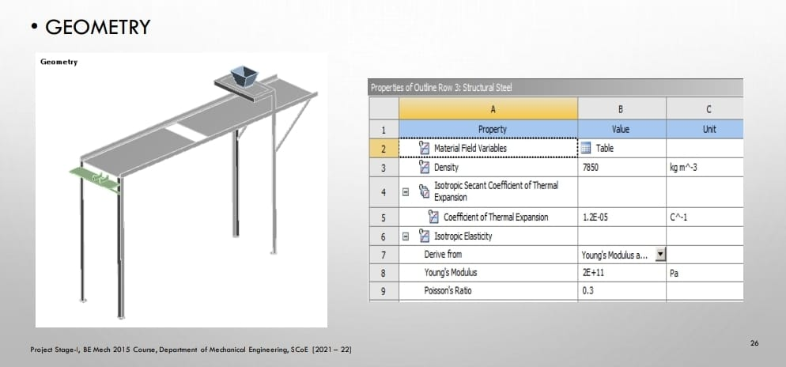
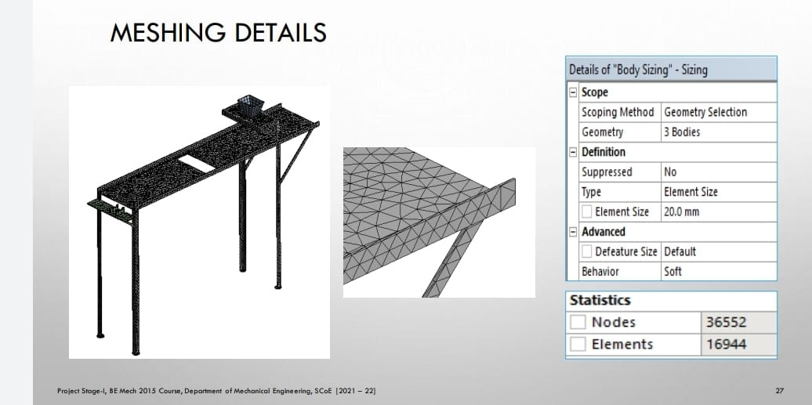

Analysis
FEA(Finite Element Analysis)
The finite element method (FEM), is a numerical method for solving problems of engineering and mathematical physics. Typical problem areas of interest include structural analysis, heat transfer, fluid flow, mass transport, and electromagnetic potential. The analytical solution of these problems generally require the solution to boundary value problems for partial differential equations. The finite element method formulation of the problem results in a system of algebraic equations. The method yields approximate values of the unknowns at discrete number of points over the domain. To solve the problem, it subdivides a large problem into smaller, simpler parts that are called finite elements.
In the first step, the element equations are simple equations that locally approximate the original complex equations to be studied, where the original equations are often partial differential equations (PDE). The process, in mathematical language, is to construct an integral of the inner product of the residual and the weight functions and set the integral to zero. In simple terms, it is a procedure that minimizes the error of approximation by fitting trial functions into the PDE. The residual is the error caused by the trial functions, and the weight functions are polynomial approximation functions that project the residual. The process eliminates all the spatial derivatives from the PDE, thus approximating the PDE locally with
• A set of algebraic equations for steady state problems,
• A set of ordinary differential equations for transient problems.
These equation sets are the element equations. They are linear if the underlying PDE is linear, and vice versa. Algebraic equation sets that arise in the steady state problems are solved using numerical linear algebra methods, while ordinary differential equation sets that arise in the transient problems are solved by numerical integration using standard techniques such as Euler's method or the Runge-Kutta method.
FEM is best understood from its practical application, known as finite element analysis (FEA). FEA as applied in engineering is a computational tool for performing engineering analysis. It includes the use of mesh generation techniques for dividing a complex problem into small elements, as well as the use of software program coded with FEM algorithm. In applying FEA, the complex problem is usually a physical system with the underlying physics such as the Euler-Bernoulli beam equation, the heat equation, or the Navier-Stokes equations expressed in either PDE or integral equations, while the divided small elements of the complex problem represent different areas in the physical system.
In present research for analysis ANSYS (Analysis System) software is used. Basically, its present
FEM method to solve any problem. Following are steps in detail
- Geometry
- Discretization
- Boundry condition
- Solution
Workbench contain analysis of different types namely static, modal, harmonic, explicit dynamics, CFD, ACP tool post, CFX, topology optimization etc. as per problem defined.

Step 1: Details of material namely copper, steel, grey cast iron, composite material, fluid domain material is defined in engineering data. i.e., ANSYS default material is structural steel.
2: Import of geometry created in any CAD software namely CATIA, PRO E,
SOLIDWORK, INVENTOR etc. in geometry section. If any correction is to be made it can be created in geometry section in Design modeller or space claim.
Step 3: In model section after import of component
• Material is assigned to component as per existing material
• Connection is checked in contact region i.e., bonded, frictionless, frictional, no separation etc. for multi body components.
• Meshing or discretization is performed i.e., to break components in small pieces (elements) as per size i.e., preferably tetra mesh and hexahedral mesh for 3D geometry and for 2 D quad or trial are generally preferred.
Step 4: Boundary condition are applied as per analysis namely in fixed support, pressure, force, displacement, velocity as per condition.
Step 5: Now problem is well defined and solve option is selected to obtain the solution in the form of equivalent stress, strain, energy, reaction force etc.
Geometry
Mesh
ANSYS Meshing is a general-purpose, intelligent, automated high-performance product. It produces the most appropriate mesh for accurate, efficient Multiphysics solutions. A mesh well suited for a specific analysis can be generated with a single mouse click for all parts in a model. Full controls over the options used to generate the mesh are available for the expert user who wants to fine-tune it. The power of parallel processing is automatically used to reduce the time you have to wait for mesh generation. Creating the most appropriate mesh is the foundation of engineering simulations. ANSYS Meshing is aware of the type of solutions that will be used in the project and has the appropriate criteria to create the best suited mesh. ANSYS Meshing is automatically integrated with each solver within the ANSYS Workbench environment. For a quick analysis or for the new and infrequent user, a usable mesh can be created with one click of the mouse. ANSYS Meshing chooses the most appropriate options based on the analysis type and the geometry of the model. Especially convenient is the ability of ANSYS Meshing to automatically take advantage of the available cores in the computer to use parallel processing and thus significantly reduce the time to create a mesh. Parallel meshing is available without any additional cost or license requirements.
A boundary condition for the model is the setting of a known value for a displacement or an associated load. For a particular node you can set either the load or the displacement but not both. The main types of loading available in FEA include force, pressure and temperature. These can be applied to points, surfaces, edges, nodes and elements or remotely offset from a feature. The way that the model is constrained can significantly affect the results and requires special consideration. Over or under constrained models can give stress that is so inaccurate that it is worthless to the engineer. In an ideal world we could have massive assemblies of components all connected to each other with contact elements but this is beyond the budget and resource of most people. We can however, use the computing hardware we have available to its full potential and this means understanding how to apply realistic boundary conditions.

In this analysis we consider weight applied on structure is 10kg. And factor of safety 1.2
So weight = 10 X 1.2=12Kg
F = 12kg X 9.81 = 117.72 N.